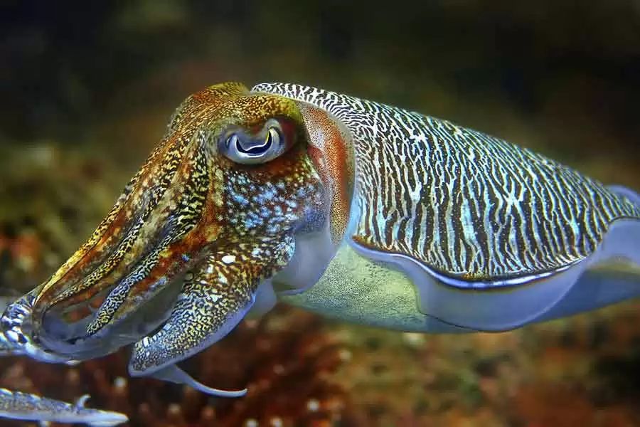
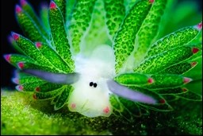
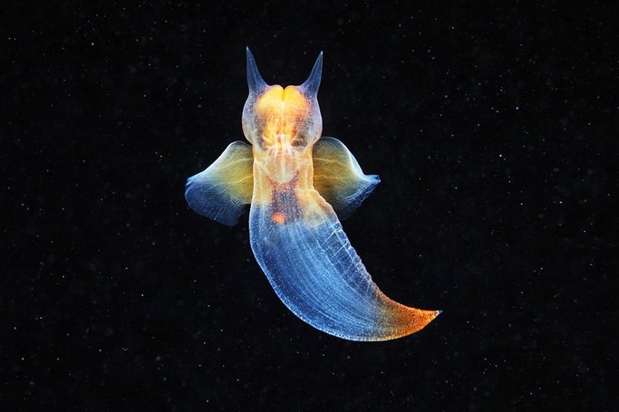
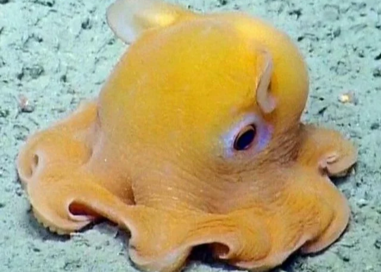
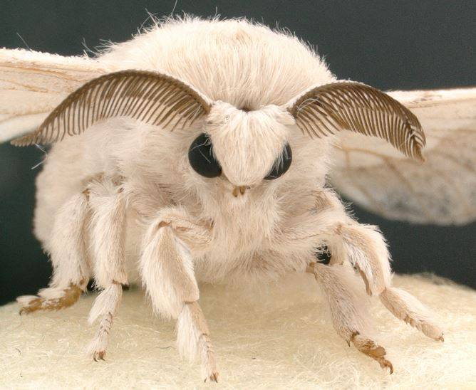
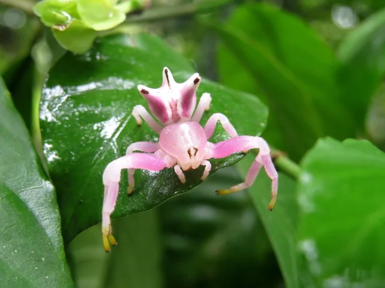
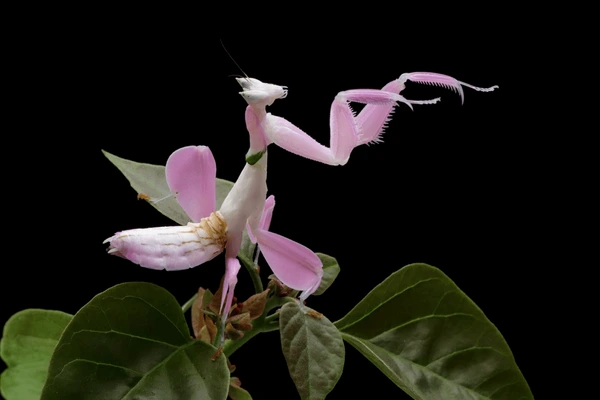
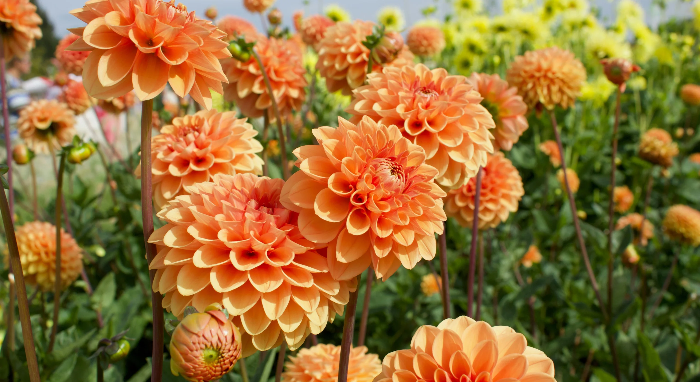
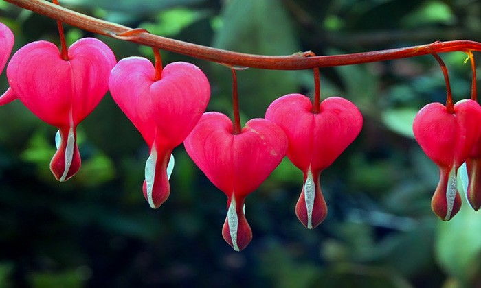
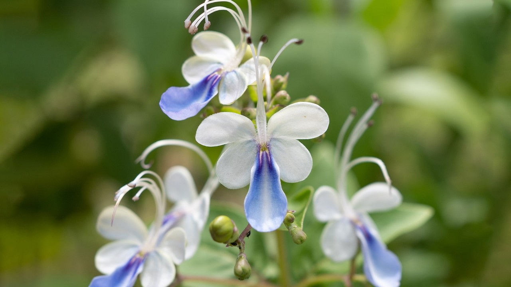

Una pequeña coleccion de insectos, animales marinos y flores.
¡Hola! Bienvenid@ a mi página dedicada a las maravillas de la naturaleza.
Aquí me gustaría mostrar algunos de mis insectos, animales marinos y plantas favoritos,
ya que soy aficionada a algunos bichitos y criaturas muy interesantes,
al igual que a ciertas plantas.
Durante las estaciones más cálidas del año, me gusta salir a caminar y observar la naturaleza.
En mis paseos he encontrado bichitos que me inspiran a aprender más sobre ellos,
así como flores muy bonitas que luego me gusta poner en libros para secarlas
y guardar en mi colección.
También me gusta encontrar conchitas de caracol deshabitadas
y guardarlas en mi otra colección.
Espero que disfrutes de esta pequeña muestra tanto como yo disfruto de ver y aprender sobre
las pequeñas cosas de la naturaleza.
- ⋆౨ৎ˚⟡˖ ࣪ Animales ࣪ ˖⟡˚౨ৎ⋆-

Sepia
La sepia es como una artista del océano. Puede cambiar de color y textura en un instante, escondiéndose de sus enemigos como si jugara a las escondidas. Además, es muy inteligente y tiene una tinta especial para escapar cuando se asusta. ¡Un verdadero genio marino!

Leaf Slug
El leaf slug, también conocido como “ovejita de mar”, es una criatura adorable que parece una hoja. ¿Sabías que puede hacer fotosíntesis como una planta? Cuando come algas, guarda sus cloroplastos y puede aprovechar la luz del sol para obtener energía. ¡Es genial!

Cliónidos
Los cliónidos, llamados “angelitos de mar”, flotan en el agua con sus alitas transparentes y parecen pequeños espíritus marinos. Aunque se ven delicados y mágicos, son cazadores muy hábiles. ¡Son como hadas del océano!

Pulpo Dumbo
El pulpo Dumbo es una de las criaturas más adorables del océano. Con sus aletas que parecen orejas, nada de una manera muy peculiar, como si estuviera volando en el agua. Además, es muy inteligente y puede cambiar de color para camuflarse. ¡Es un verdadero encanto marino!
- ⋆౨ৎ˚⟡˖ ࣪ Insectos ࣪ ˖⟡˚౨ৎ⋆-

Polilla del Arce
¡La polilla del arce parece una pequeña joya alada! Sus colores suaves y su vuelo tranquilo la hacen parecer un hada nocturna. Es experta en camuflarse entre las hojas y, aunque es muy discreta, ¡su belleza sorprende a quien la encuentra!

Epicadus Heterogaster
Esta arañita, conocida como “araña flor”, es toda una artista del disfraz. Puede cambiar de color para parecerse a las flores donde vive, ¡como si jugara a ser invisible! Es pequeñita y curiosa, y su forma de cazar es tan delicada como su aspecto.
Bombus terrestris
El abejorro es el peluche volador del jardín. Siempre ocupado, va de flor en flor recogiendo polen y ayudando a que las plantas crezcan. Su zumbido alegre y su cuerpo regordete lo hacen irresistiblemente tierno, ¡es el gran amigo de las flores!

Hymenopus coronatus
Esta mantis, conocida como “mantis orquídea”, es una verdadera obra de arte de la naturaleza. Sus patas y cuerpo imitan perfectamente los pétalos de una flor, lo que le permite camuflarse entre las plantas y sorprender a sus presas. ¡Es como si llevara un disfraz floral todo el tiempo!
- ⋆౨ৎ˚⟡˖ ࣪ Flores ࣪ ˖⟡˚౨ৎ⋆-

Dalia
Las dalias son como pequeños soles de colores en el jardín. Sus pétalos se abren en formas perfectas y brillantes creando un circulo con todos sus pétalos, alegrando cualquier rincón con su presencia. ¡Son flores que siempre parecieran ser perfectas!

Lamprocapnos Spectabilis
Esta flor, conocida como “corazón sangrante”, parece salida de un cuento de hadas. Sus pétalos en forma de corazón cuelgan delicadamente, como si fueran pequeños amuletos de amor. ¡Es imposible no sonreír al verla!

Blue Butterfly Bush
El Blue Butterfly Bush es una planta mágica que atrae mariposas con sus flores azules en forma de alas. Cuando florece, parece que el jardín se llena de pequeños vuelos y colores. ¡Es el lugar favorito de los visitantes alados!
Hortensia
Las hortensias son como pompones de colores que decoran el jardín. ¿Sabías que su color depende de que tan ácido sea el suelo?, ¡Parece mágia! Sus flores se agrupan en grandes ramilletes y cambian de color según el suelo, ¡como si tuvieran magia propia! Son elegantes y siempre llaman la atención.
.jpg)